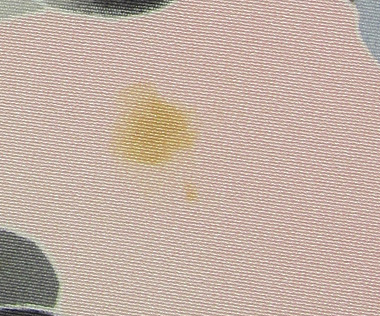
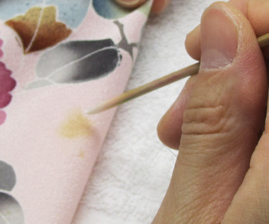
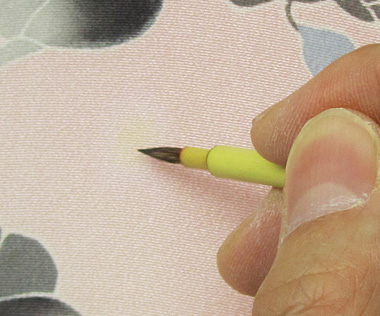
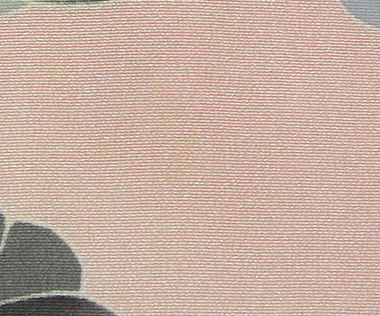

しみや汚れは放置しておくと酸化して黄変（黄ばみ）します。黄変はとても頑固なため、丸洗いやしみ抜きでは落とせません。漂白作用のある薬品を使用して黄変を抜きますが、生地の色も共に抜けてしまいます。そこに色を掛けて、地色と同色に仕上げる高度な技術を必要とする修正です。
黄変抜きの流れ
|  |  |  |  | |||
| タンスから取り出したら黄変が… | 薬品を使って黄変を抜くと 地色まで抜けてしまいます |
でも安心、高度な色掛け 技術で元通りに |
完成 |
「黄変直し」のできない一例・襦袢と裏地（八掛・羽二重生地）・・・生地が薄く、染めの堅ろう性が低いため
・生地が古く（脆化して）弱っているもの
・黄変が進みすぎたもの（焼け焦げのような茶褐色に変色したもの）
・色掛けによって復元できないもの・・・先染め生地・細かい柄模様（江戸小紋・鮫小紋など）